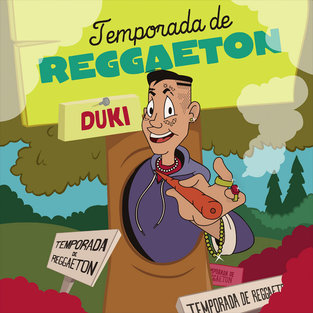
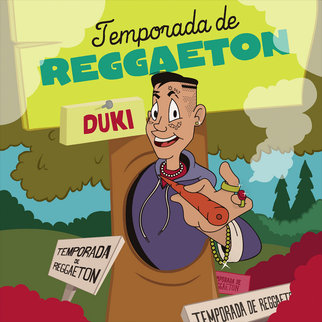
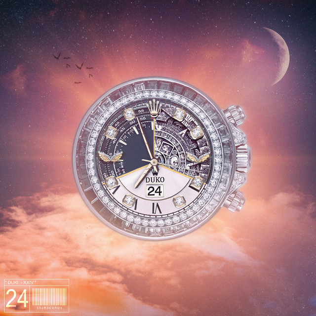
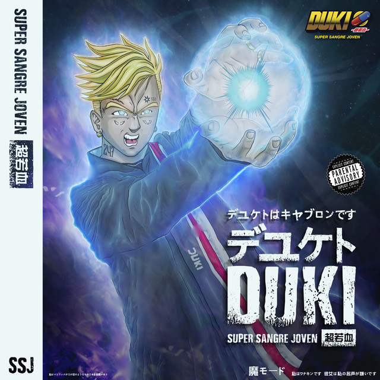
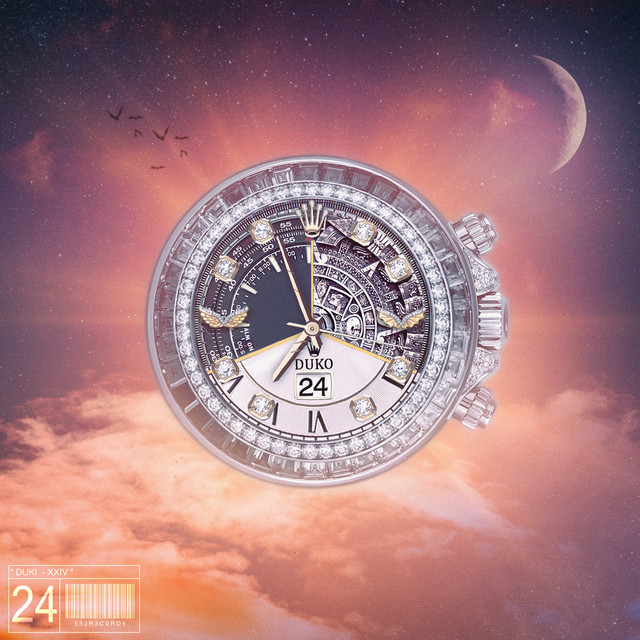
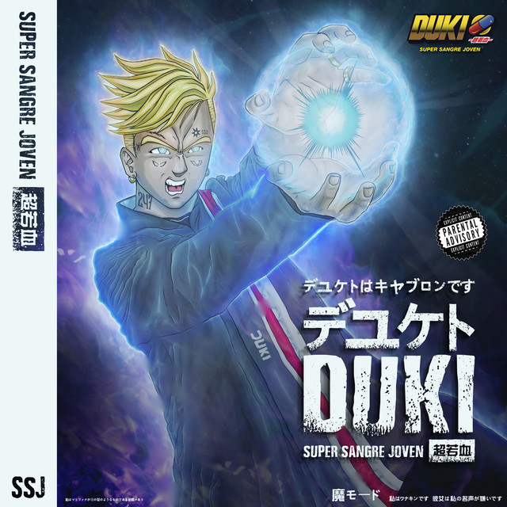

Biografia:
Mauro Ezequiel Lombardo Quiroga, mundialmente conocido como Duki, es una figura emblemática en la escena musical argentina. Nacido el 24 de junio de 1996 en Almagro, Buenos Aires, este talentoso rapero y compositor ha dejado una marca indeleble en la industria con su habilidad lírica única y su capacidad para conectar con el público. Duki emergió de las ardientes batallas de freestyle, consolidándose como un fenómeno en ascenso durante su participación en la competencia El Quinto Escalón. Fue en 2016 cuando alcanzó la cima, proclamándose campeón y ganándose la atención de la escena musical. Este triunfo no solo le dio el reconocimiento en las calles, sino que también le proporcionó la plataforma para lanzar su carrera profesional. Su primera incursión en la música grabada llegó poco después de su victoria en El Quinto Escalón. Colaborando con el renombrado productor discográfico Omar Varela, Duki lanzó su primer sencillo, marcando el inicio de una ascensión meteórica en la escena del rap argentino. Con una presencia escénica magnética y letras que resuenan con la juventud, Duki no solo se limitó a la carrera en solitario. En 2018, se unió a los destacados raperos YSY A y Neo Pistea para formar el grupo "Modo Diablo". Esta colaboración resultó en sencillos impactantes como "Quavo" y "Trap N' Export", que no solo alcanzaron el éxito comercial sino que también contribuyeron de manera significativa a la expansión del género del trap en Sudamérica.
Discografia:
 

 


